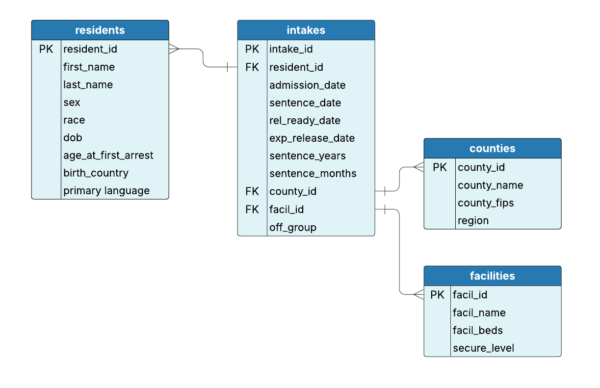

Lesson 4: Working with Multiple Tables
Introduction
In previous lessons, we learned how to write basic SQL queries, filter and sort data, and perform aggregations. But most useful information in a corrections database doesn’t live in a single table. Resident characteristics may live in one table, intake dates in another, and facility details in yet another. To bring this information together tp glean meaningful insights, you’ll need to learn how to join tables.
In this lesson, you’ll learn how to do the following:
Use different types of joins to combine data across tables.
Understand how primary keys and foreign keys connect tables.
Use table aliases to simplify your queries.
Joins are essential for corrections analysts who need to pull together data from multiple sources—like linking resident demographics with intake histories, facility details, or education levels—to paint a more complete picture.
Understanding table relationships
In a relational database, tables are connected through key fields that define relationships between them. These keys are what allow us to combine and analyze data across multiple tables using joins.
There are two types of keys commonly involved in these relationships:
Primary Key (PK): A unique identifier for each row in a table
Foreign Key (FK): A field that refers to the primary key in another table
Let’s look at our Entity Relationship Diagram (ERD):

Notice the following in the diagram:
The
residentstable has a **primary *key** calledresident_id.The
intakestable also includes aresident_id, but in this case, it’s a foreign key — it references theresident_idin theresidentstable. This connection lets you join the two tables to see both personal and intake information for each resident.The
intakestable also includes afacil_id(foreign key), which connects to thefacilitiestable. This tells us which facility a resident was admitted to.The
county_idin intakes is a foreign key linking to thecountiestable, and theed_level_idin residents links to theed_leveltable.
By identifying these primary–foreign key connections in the ERD, we can see how data is structured and how to join the right tables for analysis.
Understanding these relationships is key to writing accurate joins that return complete, meaningful data for analysis.
Types of joins in SQL
SQL supports several types of joins that define how rows from one table are matched with rows from another.
Before we look at the join types, it helps to understand what “left” and “right” mean:
The left table is the one listed first in the
FROMclause.The right table is the one listed after the
JOINstatement.
You can think of SQL joins like combining two spreadsheets. The position of the tables (left or right) affects what data is returned, especially when rows don’t match between tables.
There are four main JOINS used in SQL:
INNER JOIN: Returns only the rows that have matching values in both tablesLEFT JOIN: Returns all rows from the left table and matching rows from the right tableRIGHT JOIN: Returns all rows from the right table and matching rows from the left tableFULL OUTER JOIN(orFULL JOIN): Returns all rows from both tables, withNULLswhere no match is found
Choosing the correct join depends on the kind of relationship you want to analyze and what type of completeness you need in your results.
Using table aliases
Before jumping into specific join types, let’s talk about table aliases. When you’re working with multiple tables, your queries can quickly get cluttered. Table aliases let you assign a short or easily interpretable nickname to a table—making your SQL easier to write and read.
Let’s look at an example of how to use table aliases.
Instead of using:
SELECT residents.first_name,
residents.last_name,
intakes.admission_date
FROM residents
JOIN intakes
ON residents.resident_id = intakes.resident_id;You can use the following:
SELECT r.first_name,
r.last_name,
i.admission_date
FROM residents AS r
JOIN intakes AS i
ON r.resident_id = i.resident_id;In this example:
ris a shorthand for the residents table.iis a shorthand for the intakes table.
This helps avoid repeating full table names, especially when the table names are long and/or complex or when there are multiple joins.
Be aware that organizations may have different style conventions regarding aliases. Some may prefer more descriptive or standardized aliasing to maintain readability. While short aliases save space, they can reduce clarity if it’s not immediately obvious which table each alias refers to.
Now let’s see what joins look like in practice.
INNER JOIN: Matching records across tables
An INNER JOIN returns records that exist in both tables based on a shared key. This is one of the most common types of joins you’ll use, as it gives you clean, reliable results by excluding any unmatched data. You’ll typically use an INNER JOIN when you’re only interested in records where the relationship exists in both tables—such as residents who have an intake record, or intakes that correspond to a known facility.
Let’s take a look:
Linking resident demographics to intakes hh
Suppose you want to view a list of residents and their admission dates. The resident names are stored in the residents table, and the admission dates are in the intakes table. Using an INNER JOIN, the following query can be used to view results with information from both tables:
SELECT r.first_name,
r.last_name,
i.admission_date
FROM residents AS r
INNER JOIN intakes AS i
ON r.resident_id = i.resident_id;or
SELECT r.first_name,
r.last_name,
i.admission_date
FROM residents AS r
JOIN intakes AS i
ON r.resident_id = i.resident_id;What these queries do:
Both queries pull only records that exist in both residents and intakes. It retrieves the first and last names of residents from the residents table and the admission date from the intakes table. It could be useful for printing a roster or other type of report.
LEFT JOIN: Keeping all records from the first (left) table
A LEFT JOIN returns all records from the left table (the table listed in the FROM clause) and any matching records from the right table (the table listed in the LEFT JOIN clause). If there’s no match, you’ll still see the row from the left table, but the columns from the right table will show NULL or blank. You can use a LEFT JOIN when you want to keep all data from your main table—even if there’s no related information in the joined table. For example, if you want a list of all intakes, even if some are missing a linked resident, a LEFT JOIN ensures they aren’t excluded from your results.
Joining intakes with resident data
You’ve been asked to help the research team prepare a report on recent admissions into the state correctional system. The report should include details about each admission, including the resident’s id, admission date, offense group, sex, and birth country.
SELECT i.resident_id,
i.admission_date,
i.off_group,
r.sex,
r.birth_country
FROM intakes AS i
LEFT JOIN residents AS r
ON i.resident_id = r.resident_id;What this query does:
This query returns a list of all admissions from the intakes table, even if there is no matching resident information in the residents table. This is useful for identifying admissions that may be missing all or partial resident records. Notice in the example that the resident_id = doc_0003 birth country is blank. In this case the resident has a record, but it is incomplete.
RIGHT JOIN: Keeping all records from the second (right) table
A RIGHT JOIN works just like a LEFT JOIN, except it returns all records from the right table, and only matching records from the left table.
Viewing all intakes (even without matching resident info)
Let’s say your intake system is collecting records independently, and some intakes might not have matched residents yet due to pending ID verification. The following query can be used:
SELECT r.resident_id,
r.first_name,
i.intake_id,
i.admission_date
FROM residents AS r
RIGHT JOIN intakes AS i
ON r.resident_id = i.resident_id;What this query does:
This would return all intakes, even those that don’t have matching residents. This is useful when checking for unmatched or abandoned records in your system. In our database, all of our intake records are matched to residents, so no nulls were returned.
A RIGHT JOIN is less common, as it’s just a flipped version of a LEFT JOIN. Most people prefer LEFT JOIN since it’s more natural to list the main table first. You can avoid a RIGHT JOIN by switching the table order and using a LEFT JOIN so that it’s easier to read and more consistent.
FULL OUTER JOIN (or FULL JOIN): Keeping all records from both tables
A FULL OUTER JOIN returns every record from both tables, whether or not they match. Where there is no match, you’ll see NULLs. This type of join is useful when you need a complete view of two datasets—even when some records don’t align. For example, if you’re comparing two systems to find mismatched data (e.g., a list of facilities from two different databases), a full outer join can help identify entries that only exist in one source or the other.
Full overview of resident and intake data
SELECT r.resident_id,
r.first_name,
i.intake_id,
i.admission_date
FROM residents AS r
FULL OUTER JOIN intakes AS i
ON r.resident_id = i.resident_id;What this query does:
This returns everything—residents without intakes, intakes without residents, and all matched pairs. In our database, all of our intake records are matched to residents, so no nulls were returned.
Recap: Visualizing joins
Let’s look at a quick comparison of the different join types using the intakes and residents tables as examples. Here’s a visual guide showing the different types of joins and what data is returned from each:
Joining with reference tables
You’ll often need to join to reference tables to pull in descriptive labels—like the full name of a county or facility. These tables store standardized data that appears repeatedly across records. Instead of storing long text descriptions in every row of a large table (like intakes), databases use compact codes (like county_id) to link to these reference tables. This keeps the database efficient, consistent, and easier to maintain. Reference tables are also useful for updating standard terms in one place without needing to modify multiple tables.
Linking intakes to county names
Let’s say your report needs to show county names rather than numeric IDs. You can join your query to the county reference table:
SELECT i.intake_id,
i.admission_date,
c.county_name
FROM intakes AS i
LEFT JOIN counties AS c
ON i.county_id = c.county_id;What this query does: It joins the intakes table with the counties reference table using county_id and replaces the ID with a more digestible county name.
In a corrections environment, this helps communicate data findings more clearly—especially when sharing dashboards or reports with stakeholders who may not recognize internal ID numbers.
Chaining multiple joins
You can also join multiple tables in a single query to build a more complete dataset.
Let’s give it a try!
Joining resident demographics, intakes, and facility names
Let’s say you’re running a report to review resident profiles and need to include their admission date and the facility they’re housed in. The following query can be used to JOIN the residents table to the intakes and facilities tables.
SELECT r.first_name,
r.last_name,
i.admission_date,
f.facil_name
FROM residents AS r
INNER JOIN intakes AS i
ON r.resident_id = i.resident_id
INNER JOIN facilities AS f
ON i.facil_id = f.facil_id;What this query does:
It combines three tables to show which residents were admitted to which facilities and when.
Key takeaways
Joins are essential for combining related information spread across multiple tables in a relational database.
SQL supports different types of joins:
INNER JOIN: includes only rows with matching values in both tablesLEFT JOIN: includes all rows from the left table and matching rows from the rightRIGHT JOIN: includes all rows from the right table and matching rows from the leftFULL OUTER JOIN: includes unmatched rows from either or both tables
Table aliases make your queries cleaner, easier to read, and potentially shorter. This is especially helpful when joining multiple tables.
Understanding how tables relate to one another using primary and foreign keys is necessary for writing accurate join conditions.
You can join reference tables (like facilities, counties, or ed_levels) to enrich your results with descriptive information instead of numeric IDs.
SQL allows you to chain multiple joins, combining three or more tables to pull together complex insights—for example, linking a resident to their intake and the facility they’re housed in.
These skills are essential for making connections between datasets and uncovering meaningful insights in corrections data. Real-world data analysis often requires looking beyond a single table. Knowing how to join across tables gives you the power to see the full picture, spot gaps, and generate meaningful insights that support operations, audits, and decision-making in corrections.
In this lesson, you learned how to join tables to combine information from multiple sources—a critical skill for working with relational databases. You practiced different types of joins, including INNER, LEFT, RIGHT, and FULL OUTER, and saw how each one can be used to build a more complete picture of your data. In the next lesson, you’ll explore how to create calculated fields and use built-in SQL functions to perform on-the-fly analysis, helping you answer key questions and identify patterns in corrections data.